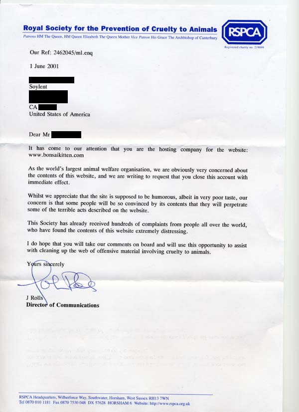

cease & desist letter #13 - Bonsai Kitten
An archive of disturbing illustration
Part I. Cause
Hundreds of people complain about the Bonsai Kitten site that we host,
to the UK Royal Society for the Prevention of Cruelty to Animals. Never
mind that no cruelty occurred either in the creation of the website or
as a result from it. They think they see kitties being abused and
therefore the site must be eradicated. The word hoax does not
exist in their dictionary.

Part II. Conclusion
There is no problem, no action taken.
[return to rotten.com]
|